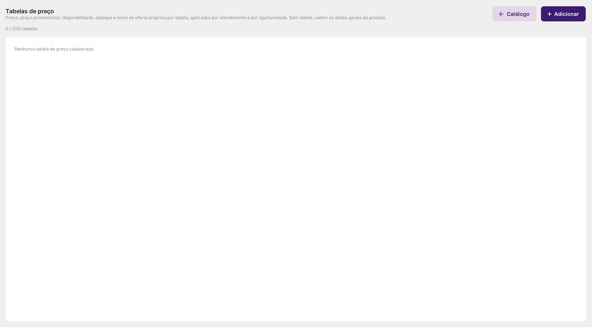
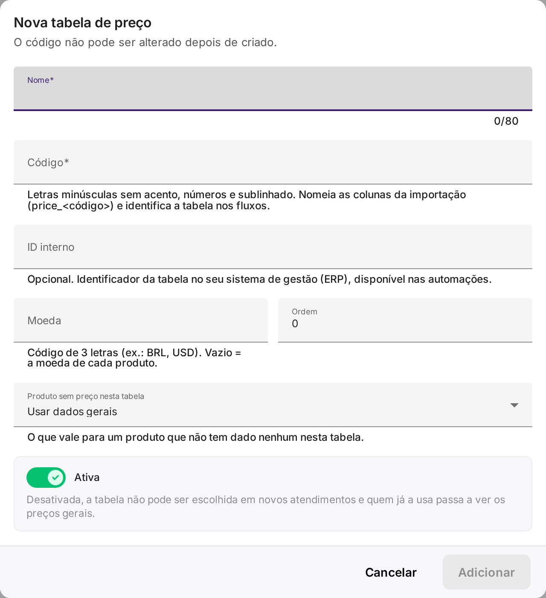

Tabelas de Preço
Um mesmo produto pode ter preço, promoção, disponibilidade, estoque e texto de oferta diferentes por canal de venda — e a tabela certa acompanha o atendimento e a oportunidade até o pedido.
1. Quando usar uma tabela de preço
O cadastro do produto guarda um preço. A tabela de preço guarda o preço daquele produto para um contexto: a loja, o atacado, o contrato, a campanha. Quem atende escolhe a tabela (ou o fluxo escolhe) e tudo o que o atendimento mostra — carrinho, catálogo do WebChat, respostas do assistente, variáveis de produto — passa a usar os valores daquela tabela.
| Cenário | Como fica |
|---|---|
| Rede com preço diferente por loja | Uma tabela por loja (loja_1, loja_2) com a linha de cada produto; o cliente que escolhe a loja no atendimento recebe os preços dela. |
| Atacado e varejo no mesmo catálogo | Duas tabelas; o fluxo decide pela quantidade mínima ou pelo cadastro do cliente. |
| Contrato com preço negociado | Tabela por contrato, identificada pelo ID interno que já existe no ERP — a integração não precisa traduzir código. |
| Campanha com preço promocional | Tabela ativa só durante a ação; ao desativar, quem já estava usando volta aos preços gerais e ninguém novo entra nela. |
| Item que não é vendido em certa praça | Produto sem linha na tabela e a tabela com a política “indisponível”: ele aparece como indisponível, sem sumir do catálogo. |
2. Onde fica na tela
O cadastro fica em Configurações › Catálogo › Tabelas de preço. A lista mostra as tabelas na ordem de exibição, com o contador de uso do plano (o teto é de 200 tabelas por instância).

A aba Adicionar abre o formulário de criação:

3. Campos do cadastro
| Campo | Regra | Para que serve |
|---|---|---|
| Nome | Obrigatório, até 80 caracteres | Rótulo que o atendente vê ao escolher a tabela. |
| Código | Obrigatório, minúsculas sem acento, números e sublinhado, até 40 caracteres. Imutável. | Identificador técnico. Nomeia as colunas da importação (price_<código>) e é a chave em priceTables na API de produtos. |
| ID interno | Opcional, texto livre até 100, não precisa ser único | Identificador da tabela no ERP. A integração e as automações podem apontar por ele em vez do código. |
| Moeda | Código ISO de 3 letras (ex.: BRL, USD); vazio = a moeda de cada produto | Permite tabela em moeda diferente do cadastro geral. |
| Ordem | Inteiro | Posição na lista de escolha. |
| Produto sem preço nesta tabela | Usar dados gerais (padrão) ou Indisponível | É a política para o produto que não tem linha na tabela. “Usar dados gerais” herda preço, estoque e oferta do cadastro; “Indisponível” marca o item como fora de venda naquele contexto. |
| Ativa | Ligado por padrão | Desativada, a tabela não pode ser escolhida em novos atendimentos e quem já a usava passa a ver os preços gerais. As linhas dos produtos são mantidas. |
4. Preços por produto
Cada linha liga um produto a uma tabela e pode definir cinco coisas de forma independente: price, salePrice, available (0/1), qty (aceita negativo) e offerText. Campo não definido na linha herda o cadastro geral — é assim que se monta uma tabela em que só o preço muda.
{
"id": 1234,
"priceTables": {
"loja_1": {"price": 89.90, "salePrice": 79.90, "available": 1, "qty": 12, "offerText": "Leve 2, pague 1"},
"atacado": {"price": 69.90, "qty": 480}
}
}- Na escrita (
products_create,products_update) o preço vai em decimal —89.90— e é gravado em centavos. - Na leitura (
products_get) o mesmo preço volta em centavos (8990), junto comid,namee só os campos que a linha realmente define. Ausente = herda o geral. priceTablesemproducts_updateé sempre patch: só as tabelas e campos enviados mudam;nullna tabela remove a linha do produto,nullno campo volta a herdar. Para substituir tudo de uma vez, usepriceTablesReplace: true(tabela ausente é removida;{}limpa todas as linhas).- A importação de produtos ganha uma coluna por tabela:
price_<código>,sale_price_<código>,availability_<código>,qty_<código>eoffer_text_<código>— também aceitas com prefixo de namespace (g:price_<código>) e, no XML, como tag. Coluna ausente preserva o valor atual; célula vazia remove o dado daquela tabela.
5. Como a tabela chega ao atendimento
São quatro caminhos, e eles podem se combinar. O que define qual vale é o último que agiu.
| Caminho | Como funciona | Configuração envolvida |
|---|---|---|
| Atendente, pelo chip “Tabela” | O agente escolhe a tabela do atendimento. Administrador e supervisor da fila sempre podem; o agente só com a permissão ligada. | allowagentpricetable na fila |
| Fluxo de URA ou automação | O elemento setPriceTable aplica a tabela no meio do fluxo, inclusive a partir de uma variável. | Elemento tipo 157 + variáveis chat_pricetable_* |
| Integração do site (WebChat V2) | O site informa a tabela (código ou ID interno) ao abrir o widget e ela é aplicada ao atendimento, se existir e estiver ativa — só enquanto ninguém a tiver trocado. | acceptintegrationpricetable na fila (só WebChat V2) |
| Oportunidade / API | opportunities_update com priceTable troca a tabela da oportunidade; exige a permissão “Alterar tabela de preço” do funil. | Permissão do funil |
confirmText carrega esse nome; GERAL quando o destino são os preços gerais). O elemento de fluxo não pede confirmação: ele repreça o carrinho direto e registra a troca no histórico da oportunidade. Itens que não existem na tabela nova continuam no carrinho, marcados como indisponíveis.
6. A tabela no fluxo: elemento setPriceTable
O elemento setPriceTable (tipo 157) tem saída única: o fluxo segue sempre e o desfecho fica nas variáveis. Ele aceita o código, o id numérico ou o ID interno da tabela — e aceita variável, que é o que permite decidir pelo perfil do cliente.
aplica_tabela: setPriceTable priceTable="{{tabela_do_cliente}}" resultVariableName="tabela"
confere: varCondition value="{{tabela_error}}" {
case falhou conditionOperator="!=" conditionValue="" {
aviso: message text="A tabela de preço informada não está disponível."
}
else {
segue: message text="Tabela aplicada: {{chat_pricetable_name}}."
}
}applyToOpportunityjá vem ligado (1): a tabela também vai para a oportunidade em contexto — o carrinho sincronizado do atendimento e, numa automação sobre oportunidade, a oportunidade da automação. Use0para valer só no atendimento.- Vazio,
0ougeraldevolve o atendimento aos preços do cadastro. resultVariableNameé opcional: recebe o id da tabela aplicada (0= geral) e, com o sufixo_error, o motivo da falha.- A tabela vigente aparece nas variáveis de sistema
chat_pricetable_id,chat_pricetable_code,chat_pricetable_name,chat_pricetable_internalidechat_pricetable_currency— e, na oportunidade, nas equivalentesopportunity_pricetable_*. - Vale também em URA telefônica: a ligação carrega o carrinho e o assistente de voz usa a mesma tabela.
- Na aba de teste do editor, a tabela vale para o atendimento de teste; nenhuma oportunidade real é afetada.
Erro em tabela_error | Significado |
|---|---|
PRICE_TABLE_NOT_FOUND | Código, id ou ID interno não cadastrado. |
PRICE_TABLE_DISABLED | A tabela existe, mas está desativada. |
NO_TARGET | Automação sem atendimento e sem oportunidade em contexto. |
APPLY_FAILED | Falha ao aplicar (registro do histórico, repreço do carrinho). |
7. Exemplo completo: da tabela ao preço no carrinho
O caso: uma rede tem preço de varejo e preço de atacado. O cliente informa o CNPJ no início do atendimento, o fluxo procura o cadastro e aplica a tabela de atacado quando for cliente corporativo.
- Crie as duas tabelas —
varejoeatacado— com a política “usar dados gerais” (assim só o que for diferente precisa de linha). - Defina as linhas por produto. Pela API:
products_update {"id": 880, "priceTables": {"atacado": {"price": 12.50, "qty": 500}}} - Na URA da fila, peça o documento, consulte o cadastro e decida:
define_tabela: jscode code="vars[\"tabela_do_cliente\"] = vars[\"cliente_corporativo\"] * 1 ? \"atacado\" : \"varejo\"" aplica: setPriceTable priceTable="{{tabela_do_cliente}}" resultVariableName="tabela" - Confira o efeito: o catálogo do WebChat V2, o carrinho e as respostas do assistente passam a usar o preço da tabela; os itens sem linha herdam o cadastro geral.
- Ajuste a permissão: se o agente também puder trocar a tabela durante a conversa, ligue
allowagentpricetablena fila; sem isso, só administrador e supervisor trocam. - Feche o pedido e confira na oportunidade que a tabela usada ficou registrada — as oportunidades fechadas guardam o id histórico, mesmo que a tabela seja excluída depois.
8. Pela API e pelo MCP
| Ferramenta | O que faz |
|---|---|
price_tables_list | Lista as tabelas na ordem de exibição, com usage (quantos produtos têm linha em cada uma) e o teto do plano. |
price_tables_get | Uma tabela por id ou por code, com o uso. |
price_tables_create | Cria com code e name obrigatórios. Os preços por produto entram depois, em products_update ou pela importação. |
price_tables_update | Edita nome, ID interno, moeda, política, ativação e ordem. Mudar o code é recusado (PRT_006) — ele é imutável. |
price_tables_delete | Exclui sem desfazer. Em segundo plano remove a linha da tabela de todos os produtos; oportunidades abertas voltam ao cadastro geral, as fechadas guardam o id histórico e os atendimentos passam a usar o geral. Com produtos usando a tabela, exige confirm: true. |
price_tables_update {"id": 7, "enabled": 0} tira a tabela de circulação na hora — ninguém novo entra nela e quem já usa vê os preços gerais — mantendo as linhas dos produtos para quando a ação voltar. Excluir apaga as linhas e não tem desfazer.
As tabelas também são lidas pelo fluxo e pelas automações: automations_get_system_data ["price_tables"] devolve id, código, nome, ID interno, moeda e política de cada uma — é a lista para preencher o priceTable do elemento e as chaves de priceTables nos itens do catálogo.
9. Limites e cuidados
- 200 tabelas por instância. O contador da tela mostra o consumo.
- Código imutável: renomear exige criar outra tabela e migrar as linhas. Pense no código como contrato, não como rótulo.
- Tabela desativada não é tabela inexistente: ela continua na lista, mas não pode ser aplicada e não resolve preço — o produto cai no geral.
- Ordem de resolução: linha do produto na tabela → política da tabela (geral ou indisponível). Preço promocional, quando existe, é o que o cliente vê.
- Moeda por tabela vale para os valores daquela tabela; produto sem moeda própria usa a da tabela.
- Histórico: a troca de tabela fica registrada na oportunidade, com quem trocou e quando — é o rastro para conferir por que um pedido saiu com aquele preço.